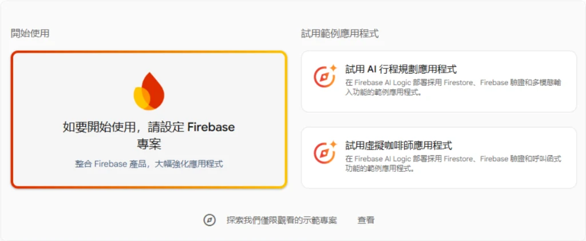
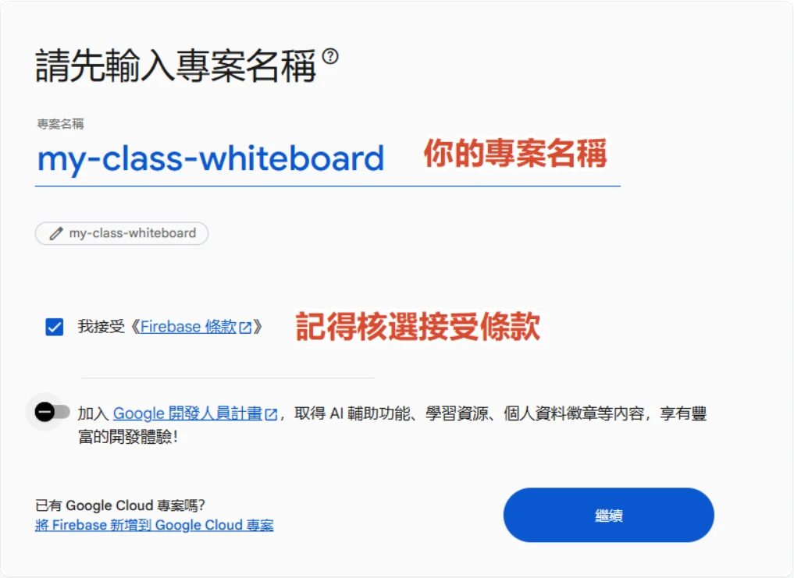
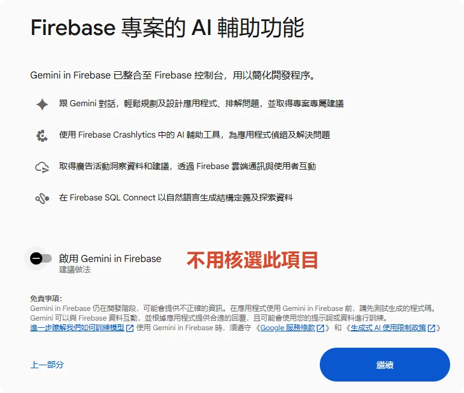
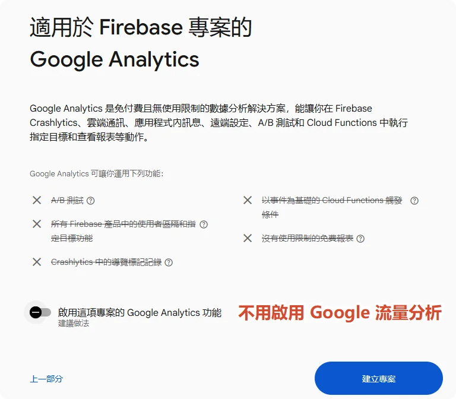
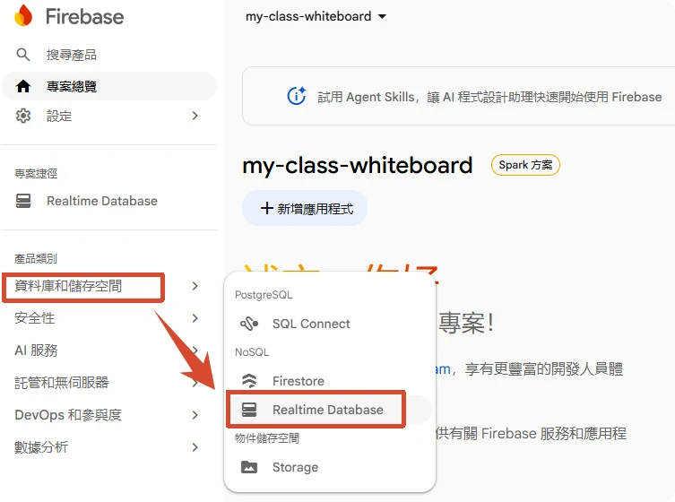
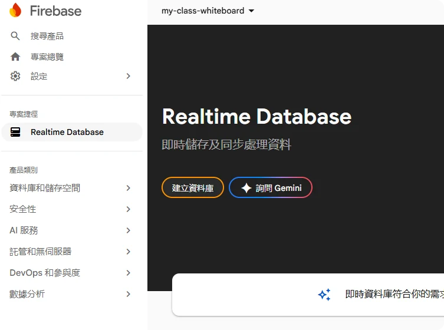
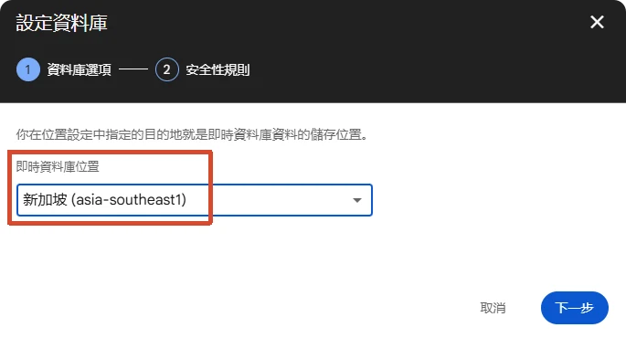
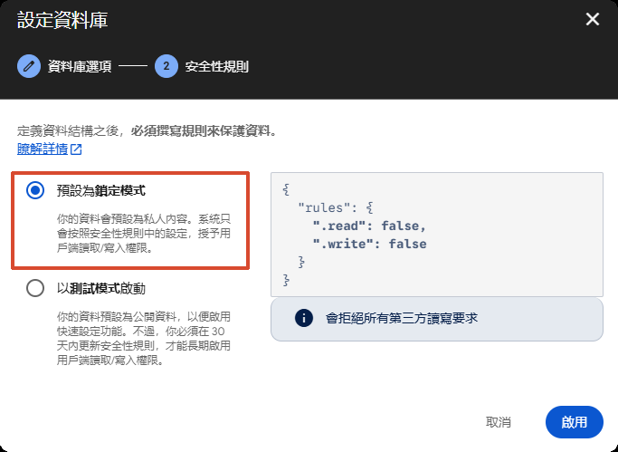
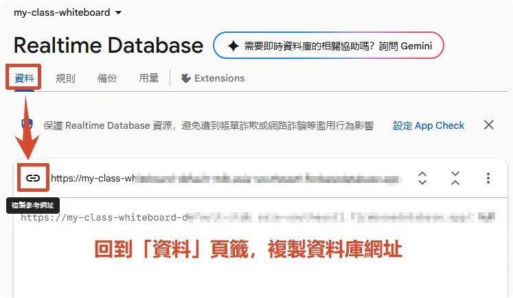

📚 教師專屬建置與連線指南（ChatGPT 修正版）
依照以下步驟，立刻為您的班級建立免費專屬的即時互動白板，並設定教師專屬密碼與安全自救機制！
步驟 1 建立免費的 Firebase 即時資料庫專案
- 前往 Firebase 主控台 🔗，登入您的 Google 帳號。
- 點選「+ 新增專案」，輸入班級名稱（例如：
my-class-whiteboard），一路點選「繼續」完成建立：



- 建立完成後，在左側選單點選「資料庫和儲存空間」 ➔ 「Realtime Database」：

- 點選頁面中的「建立資料庫」按鈕：

- 資料庫位置建議選擇 新加坡 (asia-southeast1)，點選「下一步」：

- 在新專案建立資料庫，先採用鎖定模式，再設定課堂需要的規則。

步驟 2 設定新專案的存取權限
A
複製您的資料庫 URL 網址
- 切換回 資料 (Data) 頁籤。
- 在頁面頂部會看到一串以
https://開頭的資料庫網址，點選該網址右側的「複製」按鈕：
步驟 3 登入管理後台並設定「教師專屬安全密碼」
為維護班級測驗與學生資料安全，白板採用新一代 SHA-256 加密防護體系。完成建置後，請依循以下 3 階段完成專屬身分綁定：

-
首次進入管理後台：點選白板畫面右下角的「💡 燈泡」，再選擇「管理後台」按鈕。首次登入時可使用初始預設密碼
1234進入（享有自首次啟用起算一週／7 天寬限期）；登入後請及早設定專屬密碼與安全自救問題。 - 前往 F 項目設定專屬密碼：登入後，請於「班級管理」選單點選「F. 教師身分與密碼安全設定」。在此自訂您的專屬管理密碼（至少 4 碼）。一旦設定完成，舊預設密碼即刻失效，避免他人任意進入。
- 填寫安全提示與自救問題：強烈建議設定「密碼提示」與「安全自救問題」（例如：第一所任教學校）。若日後遺忘密碼，不需外部 Email，點選登入畫面的「❓ 忘記密碼？」即可回答題目秒自救重設！
- 一組密碼，所有班級白板通用：同位老師所建立或綁定的多個班級白板，均自動共用您所設定的專屬密碼，免除記誦多組密碼的負擔。
💡 密碼自救與自主架設安全保障（各自獨立，自給自足）：
本白板採「完全獨立與去中心化」架構，您的白板資料與 Firebase 完全由您自主掌控，系統無任何全域萬能鑰匙或後門。若遺忘密碼時的自救途徑如下：
- 第一線自救（安全問題）：只要您有在後台設定「安全問題」，在登入畫面點選「❓ 忘記密碼？」並回答問題，即可即時驗證並重設密碼（答案經 SHA-256 加密儲存，無洩漏風險）。
- 終極自救（Firebase 控制台）：若連安全問題都忘了，由於您是資料庫的擁有者，您只需登入自己的 Firebase 控制台，在
teachers/節點下刪除密碼欄位（或直接刪除該教師節點），重新整理白板網頁即可直接重新設定密碼！